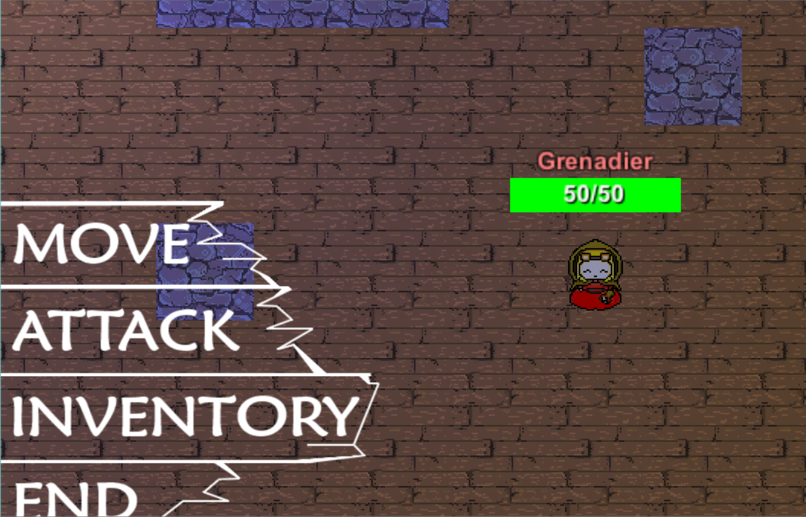
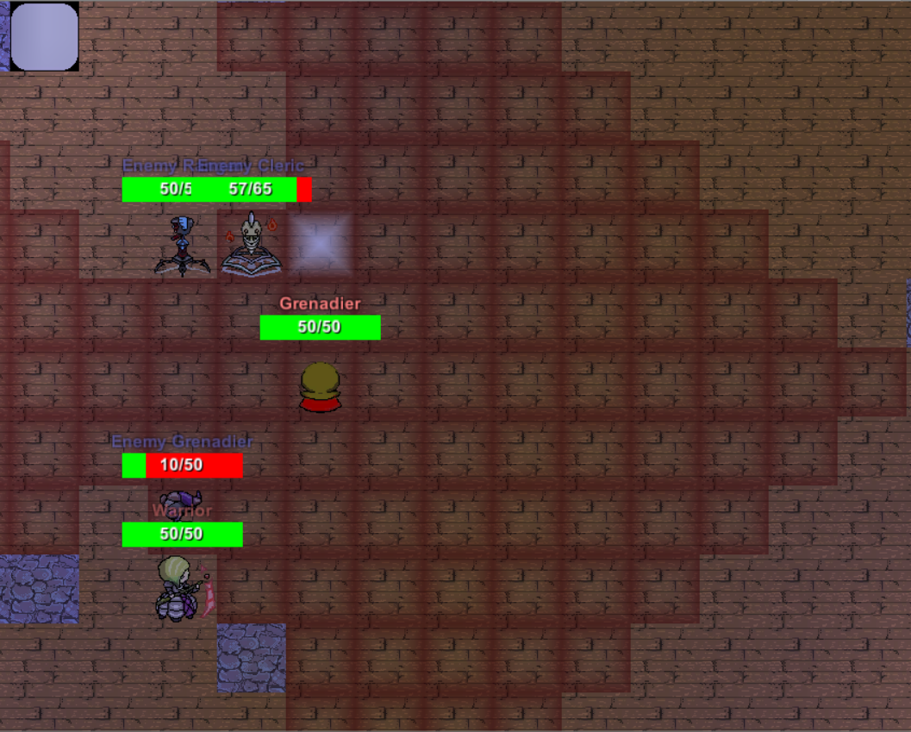
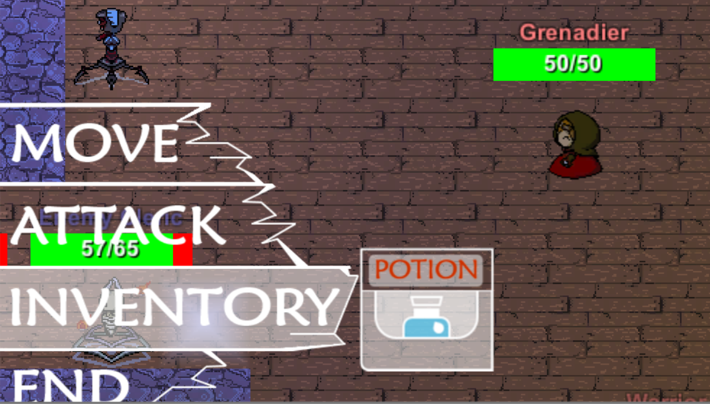
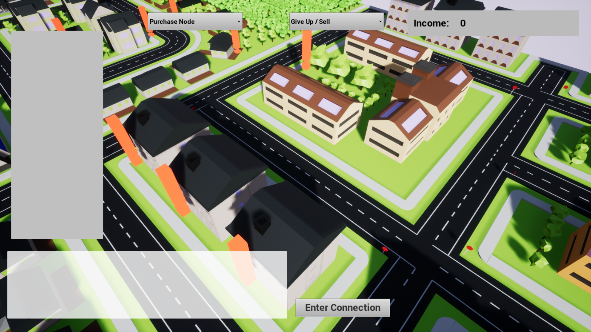
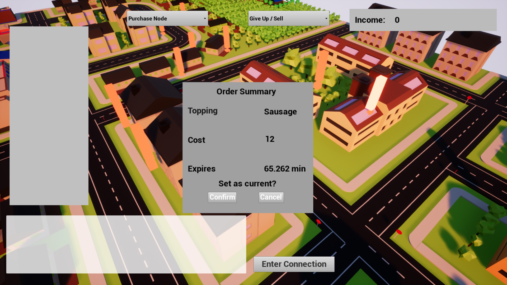
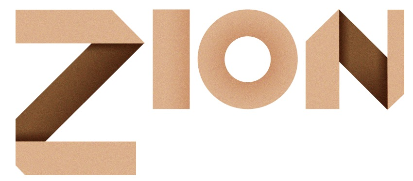

About Me
Introduction
Currently pursuing a
B.S. in Computer Science with a concentration in game
development, I am an undergraduate student at North Carolina State
University involved with third-party game development and assisted
instruction. As an introduction to Java programming foundations
Teaching Assistant, I mentor undergraduate students in developing
effective object-oriented and procedural decomposition skills. As a
member of the Video Game Development Club, I oversee other programmers
in meeting milestones and develop game systems for club projects.
Technical Skills
Languages:
C++, C, C#, .NET, Java, Javascript, Python
Game Engines:
Unity, Unreal Engine 4
Platforms:
Windows, Linux, Mac
Creation Suites/IDEs:
Eclipse, Microsoft Visual Studio,
Adobe Creative Suite,
Autodesk 3DS Max
Projects
Lead Programmer, VGDC RPG 2015
Video Game Development Club at North Carolina State University
Raleigh, NC



VGDC RPG 2015 is a Magic-Punk Tactical RPG inspired by the turn-based strategy gameplay of Fire Emblem, Shining Force,
and Final Fantasy Tactics. Two opposing teams each of four units compete on various battlefields for domination.
Players assign units elemental stones that modify their base stats, with different elemental types that both buff and debuff particular arttributes.
Challenge your friends in PVP or against the AI in dynamically generated environments.
Responsbilities
- Implemented battle mechanics, AI, and level UI in the Unity game engine
- Mentored junior programmers in project flow and development standards
- Enforced and organized source control standards via GitHub
Installation and Controls
Download and extract the folder below. Double click the executable to play. For more information, including controls, please
visit the official site.
Download: VGC_RPG_2015.zip
Gameplay Programmer, Pizza Byte
Imangi Studios
Cary, NC


Pizza Byte is a real-time strategy game where you control a pizza delivery company, with a twist. Pizza is delivered by code via radio towers
strewn throughout the world's city. Players can fulfill orders by selecting different ingredient towers and typing the generated code. However, the longer
the connection or use of incorrect ingredient towers, the longer the code! Build, sell, and dominate to become the city's pizza king!
Responsbilities
- Implemented gameplay systems using the Unreal Engine
- Created UI components for managing error states and code HUD via Blueprints
- Rapidly prototyped from concept to completion during Global Game Jam 2018
Engine Developer, Zion
North Carolina State University
Raleigh, NC

Zion is a lightweight game engine based in HTML5. It provides web-based game developers common features found in many popular game engines,
including particle systems, sprite animation, 2D physics, and audio management. Zion's framework is easily extendable and can be modified to
suit a variety of development needs. Please check out the official release at the landing page.
Responsbilities
- Co-developed game engine features based on HTML 5 Canvas
- Developed audio management, collision detection, particle system, and AI functionality
Work Experience
President
NCSU
Video Game Development Club, Raleigh, NC
Involved in medium-sized club projects ranging from a diverse selection
of game genres. Currently, tasked with programming various game
systems, including battle system and UI for a tactical strategy-based
RPG. Lead new members in teaching standard club protocol for project
communication and management.
Teaching
Assistant, Introduction to Programming: Java
North Carolina State
University, Raleigh,
NC
Assist lab professors
in teaching medium-sized college classes foundations of object-oriented
programming using Java. Manage project coordination and grading using
automated, bash script testing. Oversee student development through
independently-lead, weekly office hours and lecture assistance.
Software Engineering Intern,
Blackbaud, Charleston, SC
Developed back and front-end solutions towards improving Blackbaud’s constituent management services.
Refactored existing C#/.NET-based data service and SQL Server Database systems. Created JavaScript tools for adding
bulk sample data to existing data service frameworks.
Undergraduate
Researcher, VR Technologies and Education
Game2Learn
Lab, Raleigh, NC
(Completed May 2017)
Completed research into Virtual Reality (VR) technologies and their
potential to increase educational performance through narrative
game-based learning. Explore educational potential through measuring
student immersion, game-narrative interactivity, and comprehension of
narrative themes.
Mobile App Development Teaching Assistant
College of Engineering High School Summer
Programs, Raleigh, NC
(Completed Summer 2016)
Assisted junior and senior-level high school students in developing
Android mobile applications. Reinforced procedural and object-oriented
programming concepts through block-style development practices.
Collaboratively promoted software engineering pipeline fundamentals
with lead professor.
Contact
Please see my
schedule below for availability. If you have any questions about my
qualifications or would like to reach me, please email
me
at jegood95@gmail.com.
If you would like to personally speak with me, feel free to call me at
(980) 213 - 6658.